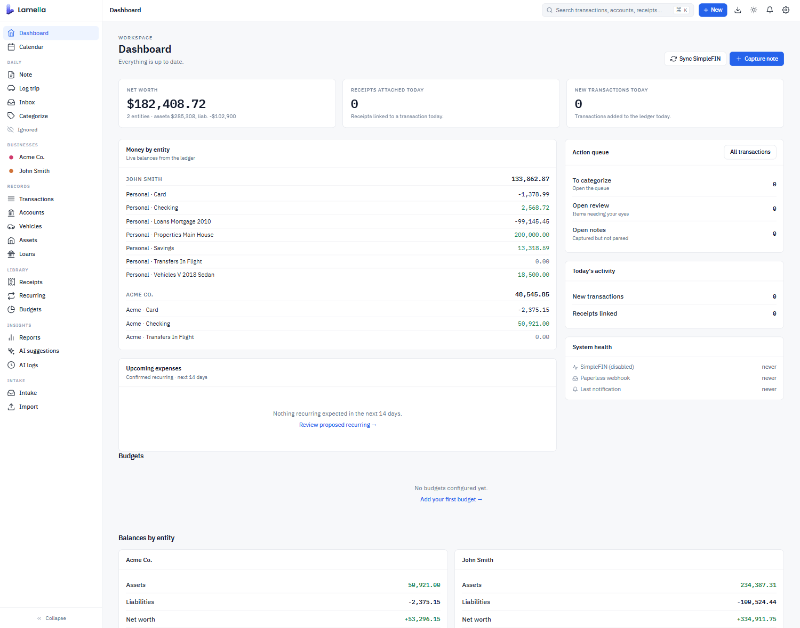
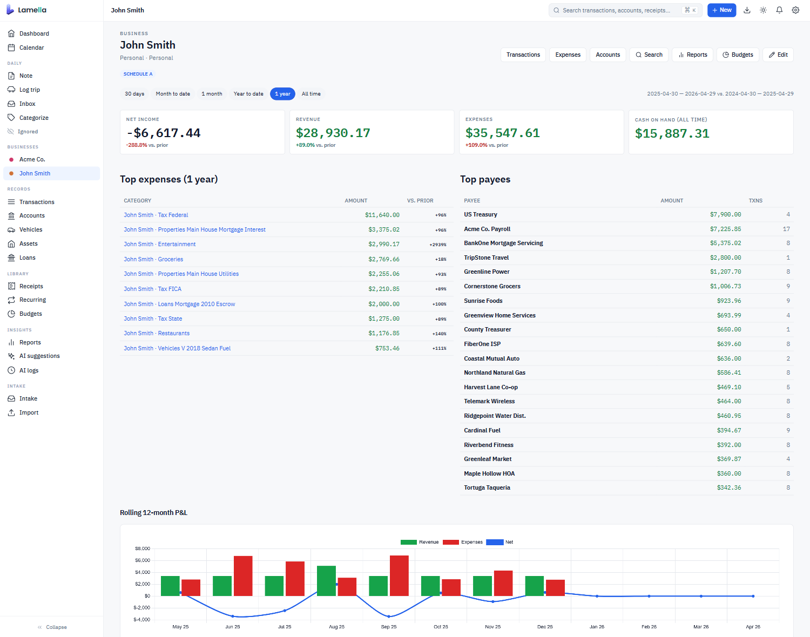
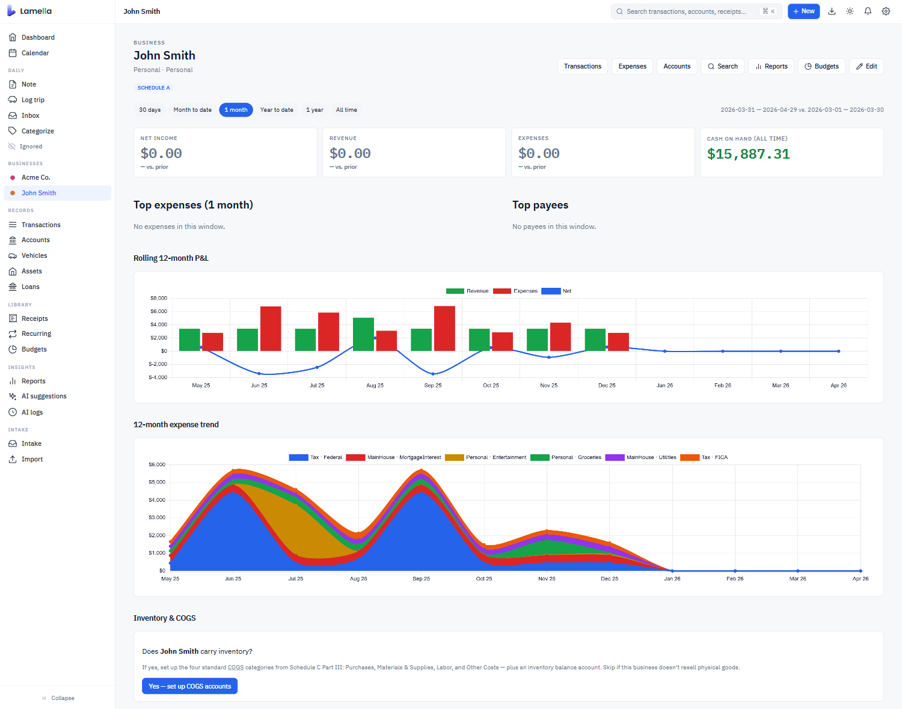
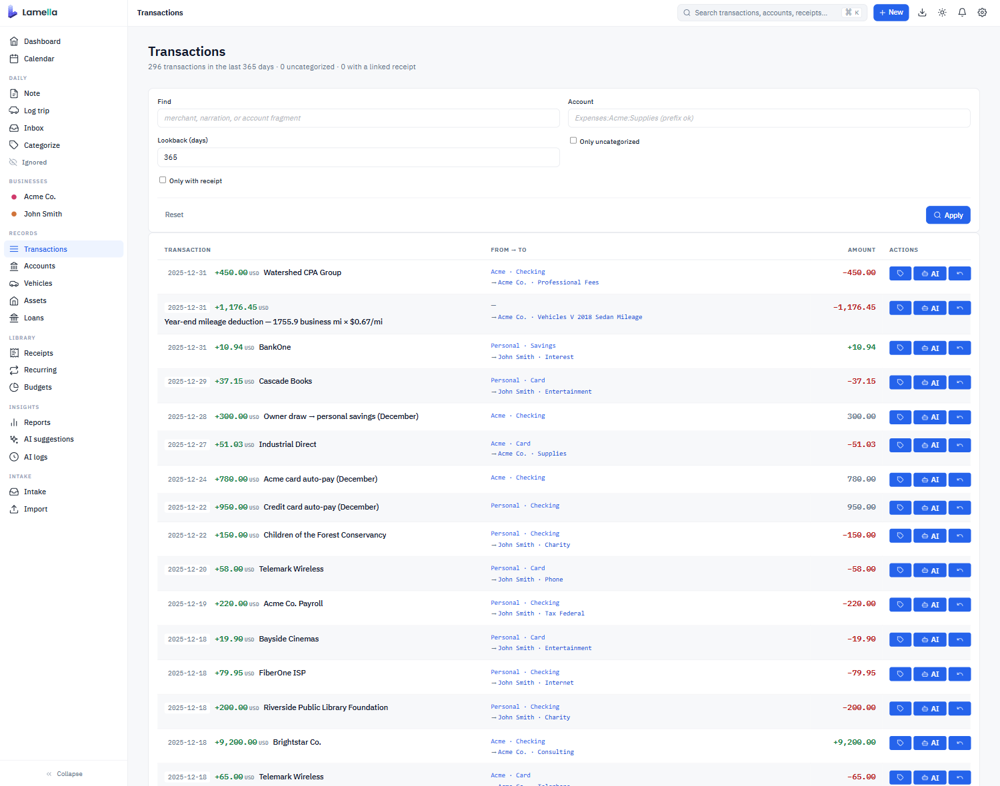
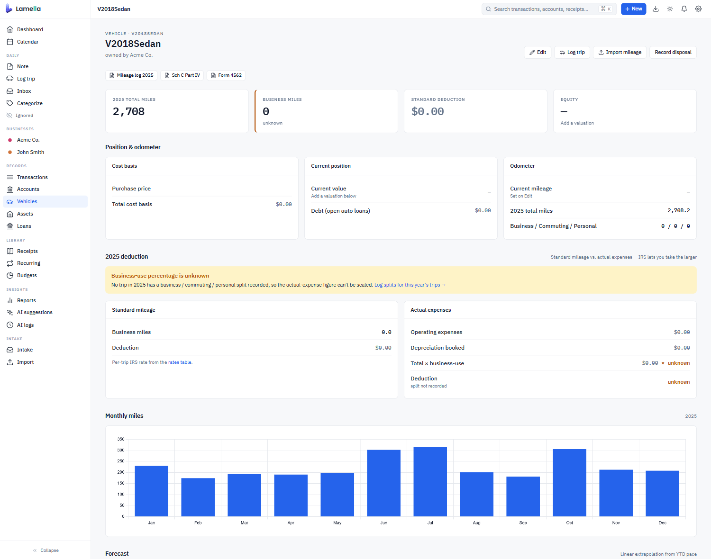

Mileage Log · Tue, Mar 12
Lunch with Sara at Bistro 21 (Acme Pitch). Stopped at Staples for presentation board, post office for the contract, back to the office. 24 mi.
Plain-text books with mileage logs, project notes, and receipts feeding the same ledger. A hardware store charge from a Saturday afternoon knows it belongs to the home improvement project.
docker run -d -p 8080:8080 -v lamella-data:/data ghcr.io/lamella-ai/lamella:latest
A worked example
The same Tuesday, from your phone and from your bank. Lamella matches them up.
Lunch with Sara at Bistro 21 (Acme Pitch). Stopped at Staples for presentation board, post office for the contract, back to the office. 24 mi.
Q2 proposal for Acme Corp. Presentation due Mar 15. Expected vendors: Staples, Bistro 21.
Foam board, 30x40 $18.99 Markers, set of 4 $13.16 Tax $1.85 Total $33.00
Same data Lamella saw: a mileage log entry, a project, and a Staples receipt. The transactions classified themselves.
What it looks like
Self-hosted Beancount with the rough edges sanded off. Personal and business entities live side by side. Vehicles, properties, and projects each get a real surface.





Context
01
Write down where you went and why, in plain English. Lamella turns it into both a deductible mileage entry and context for the day's other transactions.
02
A line or two about what you worked on today. The grocery run during a kitchen remodel reads differently than the grocery run on a normal Tuesday.
03
Long-lived context. A home improvement project, a client engagement, a side hustle. Define expected vendors and timeline once; relevant transactions get attached automatically.
04
A note left on a specific transaction. Useful when you want a second opinion. Ask "is this a charitable deduction?" and your AI can answer with a recommendation.
05
Connect Lamella to Paperless-ngx. Receipts go from photographs to line items the ledger can actually reason about.
The ledger underneath
Lamella stores every transaction in Beancount, the plain-text accounting format that's been quietly running serious finances for over a decade. Your data is text files. They survive Lamella. They version in git. They open in any text editor.
What Lamella adds is the part Beancount asks you to do yourself: friendly category names mapped to IRS Schedule A, C, and F lines; double-entry transfers automatically linked across accounts; a database with a vector index for fast search and similarity matching; and a UI that doesn't require you to memorize the syntax.
If Lamella turns out not to be a fit, export your .beancount files any time and walk away. The ledger goes with you.
; simplefin_transactions.bean 2024-03-12 * "Staples #4892" "Foam board for Acme pitch" lamella-simplefin-id: "ACT-1J8h_4892" lamella-ai-classified: TRUE lamella-ai-decision-id: "1428" Liabilities:CreditCard:Chase -33.00 USD Expenses:Acme:Supplies 33.00 USD ; connector_links.bean 2024-03-12 custom "receipt-link" "8f3a4d2e" lamella-paperless-id: 4892 lamella-match-method: "ai-suggested" lamella-match-confidence: 0.94 lamella-txn-date: 2024-03-12 lamella-txn-amount: 33.00 USD
AI
Lamella doesn't race to label every transaction the moment it imports. It works alongside you. Drop in a mileage log when you remember the trip. Forward a receipt to Paperless when you get one. Leave a note about what the day was about. The transactions classify themselves as the context catches up.
The system learns from what you've already done. Classify a few similar charges by hand and it picks up the pattern. The vector database keeps a running index of your own decisions so the next ambiguous charge has somewhere to look.
When you want a second opinion, point Lamella at any model on OpenRouter. Ask for a category suggestion. Ask whether a charge is deductible. Ask the model to summarize your day.
A few things we believe:
Imports
SimpleFIN is a $1.50/month service that gives you read-only access to your bank data. You sign up, you pay them, you paste a token into Lamella. Your bank credentials never touch us.
Or paste statement text directly from your bank's website. Lamella's importer asks a few clarifying questions and figures out the rest. Built-in importers for PayPal, eBay, Amazon, and more.
Duplicate detection runs across all sources. Pull the same Chase transactions in from a CSV and a SimpleFIN feed; they merge cleanly. Because the ledger is double-entry, transfers between your own accounts find both sides and link up automatically.
In the box
See every day's transactions, mileage, notes, and project activity in one place.
Mortgages, auto loans, student loans. Live amortization tables and "what if I pay extra" projections.
Per-vehicle mileage, fuel, maintenance, and total cost of ownership.
Set targets per category. See variance over time without leaving the ledger.
Find untagged transactions, missing receipts, and inconsistencies before tax time.
Categories map to IRS Schedule A, C, and F line items. Year-end exports do most of the work.
Fit
Open source
Apache 2.0 licensed. The repository is on GitHub. Issues, discussions, and pull requests are welcome.
Lamella runs on your hardware. There is no telemetry, no analytics, no "anonymous usage data." We don't know you installed it. The only network traffic Lamella initiates is to the services you connect: your bank's SimpleFIN endpoint, your Paperless instance, your chosen OpenRouter model. Everything else stays on the box.
Install
docker run -d -p 8080:8080 -v lamella-data:/data ghcr.io/lamella-ai/lamella:latest
Visit http://localhost:8080. Create your first ledger. Pick your business types so Lamella knows which IRS schedules to wire up.
Paste a CSV, paste a SimpleFIN token, or paste raw text from your bank's website. The importer takes it from there.